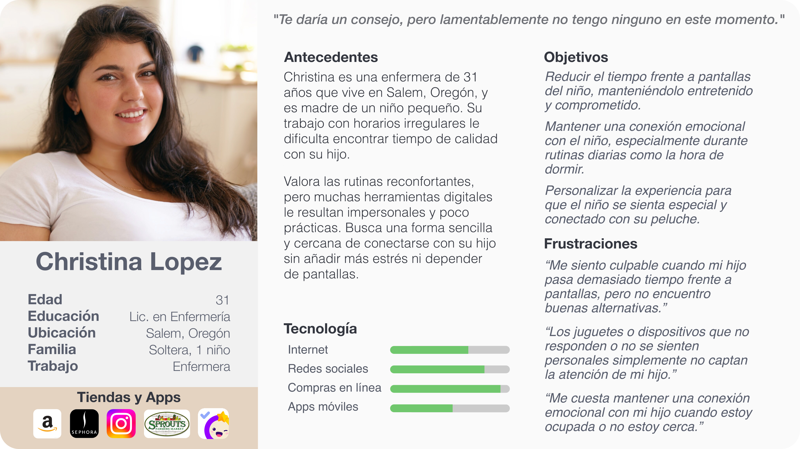
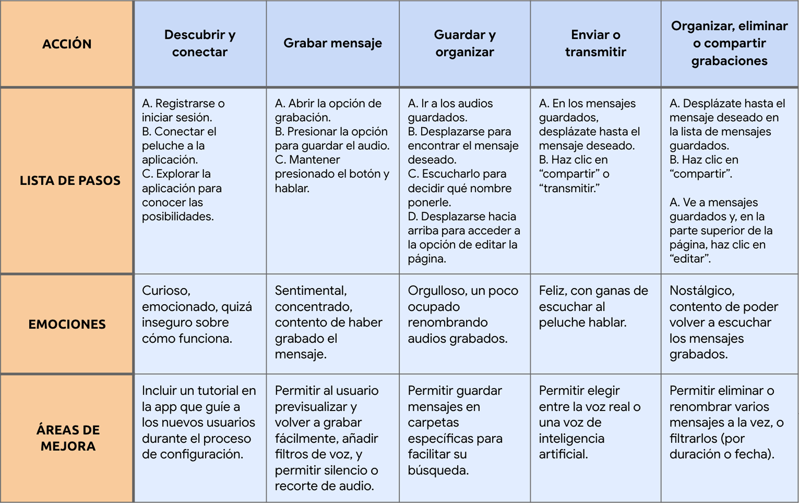
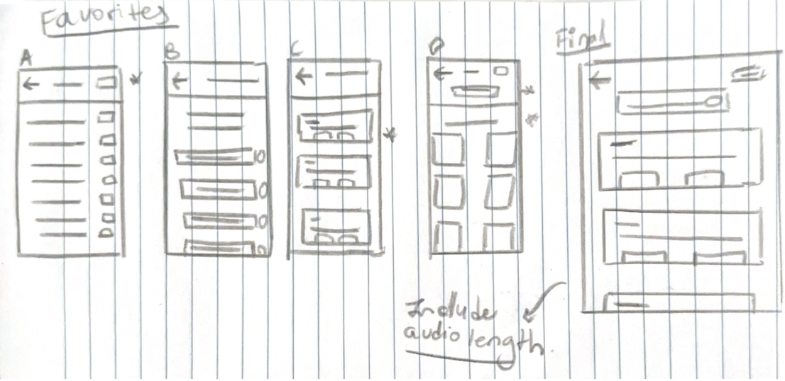

Magical Mates
Un compañero mágico para cuentos, rutinas y mensajes de voz.
Producto: Magical Mates es un peluche inteligente y una app que ayuda a los niños a establecer rutinas y a estimular su imaginación. Los padres usan la app para enviar mensajes de voz e historias, que se entregan a través del peluche usando audio generado por inteligencia artificial.
Problema: Los padres quieren limitar el uso de pantallas en sus hijos, al tiempo que se mantienen conectados y fomentan hábitos saludables. La mayoría de las herramientas carecen de calidez emocional o juego imaginativo.
Objetivo: Crear una experiencia mágica, sin pantallas, que ayude a las familias a mantenerse conectadas, establecer rutinas y fomentar la imaginación a través de peluches inteligentes con voz integrada.
Herramientas Figma, Adobe, Photopea
Plazo 3 semanas
Rol Investigación, Branding, Diseño UX/UI, Prototipado, Pruebas de usabilidad

Empatizar
Entender el problema y el usuario
Antes de realizar la investigación
Supuse que los padres querían que sus hijos tuvieran una forma de mantenerse conectados con ellos sin necesidad de pantallas y que les ayudara a establecer rutinas con más facilidad.
A través de entrevistas con usuarios y observación
Confirmé que muchas personas tenían dificultades para equilibrar sus agendas ocupadas con momentos de conexión de calidad. Una madre de un niño de cinco años compartió lo difícil que le resultaba mantener una rutina constante a la hora de dormir cuando tenía turnos de trabajo nocturnos. Ella deseaba una presencia reconfortante y familiar en la que su hijo pudiera confiar cuando ella no estuviera.
Al hablar con padres e hijos
Descubrí que la conexión emocional era tan importante como la estructura. Los padres valoraban las herramientas que ayudaban con las rutinas, y los niños respondían mejor a interacciones que se sintieran personales y tuvieran un toque de magia.
Testimonios de usuarios
"Solo quiero que mi hija sienta que estoy con ella, incluso cuando no puedo estar en casa a la hora de dormir."
— Madre de una niña de cinco años
"Mi hijo escucha mucho mejor cuando el mensaje viene de un personaje que él ama. Si se siente como un juego, no le parece una rutina.
— Padre de un niño de cuatro años
"Mami está demasiado ocupada para decir buenas noches."
— Niño, 6 años
Puntos de dolor
Tiempo de pantalla: Los padres quieren reducir el tiempo que sus hijos pasan frente a las pantallas, pero les cuesta encontrar alternativas atractivas y sin pantalla que a la vez fomenten la conexión humana.
Impersonalidad: Las herramientas actuales para rutinas e historias se sienten impersonales y carecen de calidez emocional o juego imaginativo.
Aburrimiento: Los niños pierden interés en juguetes o apps estáticas que no se sienten “vivas” ni personalizadas para ellos.
Puntos claves
Conexión emocional: Los padres priorizan mantener vínculos íntimos con sus hijos a pesar de las agendas ocupadas, buscando herramientas que preserven la calidez de la interacción personal.
Rutinas a través del juego: Los niños responden mejor a la estructura cuando se presenta mediante experiencias imaginativas y protagonizadas por personajes, en lugar de instrucciones directas.
Definir
Enmarcar el problema
A través de la investigación y entrevistas, surgió un desafío común: los padres ocupados tienen dificultades para mantener rutinas reconfortantes y una conexión significativa con sus hijos, mientras que los niños extrañan interacciones constantes y atractivas. Los padres desean reducir el tiempo frente a pantallas, pero carecen de herramientas que aporten calidez emocional y momentos lúdicos y personalizados en la vida diaria. El reto de diseño es crear una solución atractiva y fácil de usar que apoye rutinas nutritivas sin pantallas y ayude a los padres a mantenerse conectados con sus hijos, incluso cuando están separados.
Desarrollo de la persona
De las entrevistas con usuarios, quedó claro que los padres ocupados tienen dificultades para mantener rutinas reconfortantes mientras manejan agendas agitadas. Christina, una enfermera y madre de una niña de cinco años, inspiró la creación de la persona. Ella equilibra turnos nocturnos y tiempo en familia, y desea que su hija tenga una presencia familiar y reconfortante que apoye las rutinas diarias. Valora soluciones simples y sin pantallas que le ayuden a mantenerse conectada y faciliten las rutinas sin añadir complejidad.

Mapeando el recorrido del usuario
Al observar el recorrido, queda claro que padres como Christina equilibran agendas ocupadas mientras desean conexiones significativas y sin pantallas con sus hijos. Desde grabar, guardar y transmitir mensajes, hasta crear y compartir historias generadas por IA, el proceso apoya rutinas reconfortantes.
Ya sea dejando un mensaje de buenas noches o compartiendo una historia divertida antes de la escuela, estas herramientas ofrecen a familias como la de Christina una manera de mantenerse emocionalmente presentes, incluso cuando están físicamente separadas, construyendo conexión a través de la constancia, la creatividad y el cariño.

Idear
Bocetos Iniciales
Cuando comencé a hacer bocetos, mi objetivo era plasmar muchas ideas, así que creé varias versiones de cada página. Luego, destaqué ciertos elementos en cada página y los combiné en un concepto más refinado. La figura que acompaña muestra este proceso para la página de Audios Favoritos incorporados.

Wireframe Digital
Después de construir el wireframe digital, lo probé con usuarios para evaluar qué tan bien funcionaban en la práctica dos flujos principales (transmitir un mensaje y crear o transmitir una historia). Observé a los participantes, tomando nota de cuándo la estructura apoyaba sus expectativas y cuándo generaba confusión. Los comentarios indicaron que gran parte de la funcionalidad se sentía intuitiva, y un participante destacó cómo decisiones de diseño, como el uso del color, reforzaban la claridad. La retroalimentación adicional ayudó a pulir y refinar el prototipo final.

Prototipar
Prototipo de baja fidelidad
Una vez que terminé los wireframes iniciales, comencé a desarrollar el flujo de usuario en Figma para mapear cómo los padres interactuarían con la aplicación Magical Mates. Me enfoqué en funciones clave como grabar un mensaje y transmitir una historia a través del peluche interactivo. El objetivo era probar la funcionalidad de cada pantalla y asegurarme de que la navegación tuviera sentido, especialmente para padres ocupados que buscan una experiencia rápida e intuitiva. Mantuve el diseño minimalista y me aseguré de que cada acción fuera fácil de encontrar y estuviera claramente etiquetada. Dado que los elementos visuales aún eran básicos en esta etapa, mi prioridad fue garantizar que la estructura respaldara tanto los objetivos emocionales como los prácticos de la aplicación.


Prototipo de Alta fidelidad
En el prototipo de alta fidelidad, afiné la estructura de la versión de baja fidelidad y añadí elementos visuales que coincidieran con el tono de Magical Mates. Utilicé colores suaves, íconos amigables e ilustraciones simples para que la experiencia resultara más acogedora. También actualicé el microcopy para que fuera más claro y enfocado en los padres. Esta versión me permitió probar cómo se sentiría la aplicación en un uso real: si enviar un mensaje o reproducir una historia resultaba fácil, natural y emocionalmente reconfortante.

Evaluar
Mejoras basadas en comentarios de los usuarios
Historias reproducidas recientemente
Después de realizar varios estudios de usabilidad, noté que los usuarios querían una forma sencilla de volver a las historias que acababan de escuchar. En respuesta, añadí una sección de “Reproducidas recientemente” en la página de Storytime. Este cambio permite a los usuarios acceder rápidamente a sus historias más recientes sin tener que buscarlas de nuevo, haciendo que la experiencia sea más fluida y fácil de usar.
Mensajes guardados
Los usuarios querían más flexibilidad al interactuar con sus grabaciones guardadas. Actualicé la página de Mensajes guardados para incluir la opción de reproducir un mensaje directamente desde la lista, así como una nueva función de “Compartir”. Estas mejoras facilitaron que los usuarios interactuaran con su propio contenido y lo compartieran con otros, reduciendo la fricción y aumentando la usabilidad general.

Conclusión
Reflexiones finales
Al reflexionar sobre el proceso, aprendí mucho más sobre Figma de lo que esperaba, especialmente en el uso de overlays y la creación de interacciones más avanzadas en el prototipo. También mejoré mis habilidades en diseño de íconos, aprendiendo a crear íconos personalizados que encajaran con el tono de la app. Por último, adquirí un mejor sentido de cómo equilibrar la creatividad con la usabilidad, asegurándome de que cada elección de diseño tuviera un propósito claro. Estos pequeños detalles terminaron teniendo un gran impacto en la sensación de pulido e intuición del producto final.
Consideraciones de accesibilidad
Colores de alto contraste: Verifiqué que todos los colores elegidos cumplieran con los estándares de contraste WCAG para beneficiar a usuarios con limitaciones visuales y optimizar la claridad del texto.
Texto legible y accesible Utilicé textos grandes y botones de tamaño generoso para facilitar la navegación a usuarios con dificultades visuales o motoras.
Subtítulos en los mensajes Añadí subtítulos para todos los mensajes grabados, de modo que usuarios con dificultades auditivas puedan seguir utilizando las funciones principales de la aplicación.